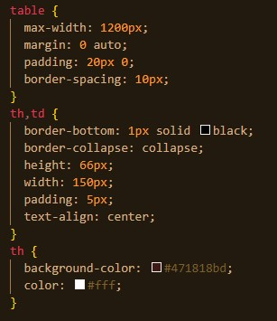

ЗВІТИ З ЛАБОРАТОРНИХ РОБІТ З ДИСЦИПЛІНИ "ІНТЕРНЕТ-ТЕХНОЛОГІЇ та ПРОЄКТУВАННЯ WEB-ЗАСТОСУВАНЬ"
Виконала студентка групи ІС-31 Березка Ірина
Лабораторна роб. №1
Лабораторна роб. №2
Лабораторна роб. №3
Лабораторна роб. №4
Лабораторна роб. №5
Лабораторна роб. №6
Лабораторна роб. №7
Лабораторна роб. №8
Лабораторна роб. №9
Тема, мета ЛР№2 місце розташування
Способи підключення стилів
СЕЛЕКТОРИ
Селектори тегу
Селектори класу
Селектори ідентифікаторів
Інші селектори
CSS: Шрифти Текст Таблиці Фон Контур Списки CSS просунутий
Висновки
Шрифти і Текст
Таблиці
Фон
Контур
Списки
CSS-PRO